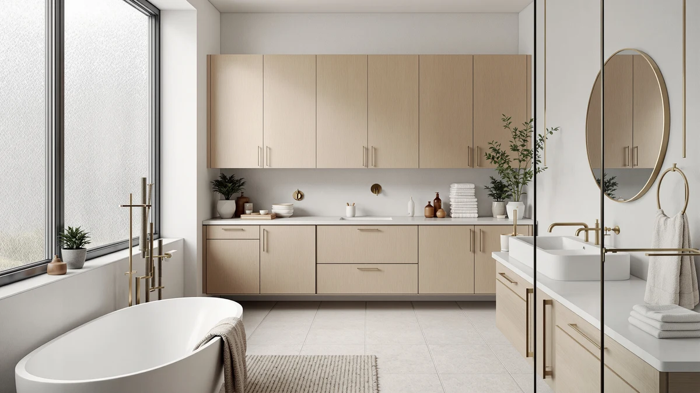

Best Storage Room Minecraft (2026)
Prices and picks verified as of August 2026. Independent, reader-supported reviews.


Quick Answer
If you're short on bathroom storage, the Kitsure Over Toilet Storage Rack ($29.99) is the pick to start with. It's the cheapest option here, clears a standard toilet tank, and adds three tiers of open shelving without any wall drilling.
Our pick: Kitsure Over Toilet Storage Rack, $29.99 Check Price on Amazon
Bottom line: our top pick is the Kitsure Over Toilet Storage Rack - Metal Over Toilet Bathroom at $35.99. The best budget option is the Simple Trending Over The Toilet Storage Cabinet at $29.99.
Things to Know Before You Buy
- Measure before you buy. These racks range from 24.25 to 30.7 inches wide. Measure the wall space behind your toilet, including tank height, before choosing a size.
- Freestanding means no drilling. All seven picks here stand on the floor or straddle the tank, so nothing anchors into tile or drywall. That's useful if you're renting.
- Open shelving vs. closed doors is a real tradeoff. Open racks like the Kitsure and Meilocar show everything at a glance; enclosed cabinets like the Yaheetech and Homhedy hide clutter but cost more.
- Price scales with material and storage, not just brand. These range from $29.99 for a basic 3-tier rack to $119.99 for a full cabinet with doors.
The space above a toilet tank is one of the most wasted spots in a small bathroom. It usually sits empty while towels, toilet paper, and toiletries pile up on the counter or floor. An over-the-toilet storage rack turns that dead air into real shelving, and none of the options below require you to drill into a wall.
We compared seven over-the-toilet racks and cabinets on price, footprint, and material. The Kitsure Over Toilet Storage Rack ($29.99) is the pick we'd start with for most bathrooms: it's the cheapest option in this guide, and its 3-tier metal-and-wood frame clears a standard tank. If you'd rather hide clutter behind doors than leave it on open shelves, the Homhedy Over The Toilet Storage ($119.99) is the enclosed cabinet in this lineup.
Every pick here is freestanding, so it stands on the floor or straddles the tank rather than anchoring into tile. That makes the whole lineup a fit for renters, and you can take any of these with you when you move.
Why You Should Trust Us
I'm Ilane Tall, and I cover bathroom storage and organization for Best Bathroom Storage. I look at storage the way someone actually living with a small bathroom does: what fits, what's sturdy, and what turns into clutter within a month.
For this guide I focused on freestanding over-the-toilet racks and cabinets, since they solve the wasted-space problem without requiring a drill. We earn a commission if you buy through our links, but that has no bearing on which products we recommend or how we describe their flaws.
How We Picked
We started with the products people actually search for when they look for over-the-toilet storage: freestanding racks and cabinets that clear a standard tank without wall-mounting. We compared listed dimensions against typical toilet clearance, ruling out anything too wide or too deep for a small bathroom.
From there we weighed material, price, and whether the design uses open shelving or enclosed storage. We favored a spread of price points and styles, from a basic $29.99 rack to a $119.99 cabinet, so this guide covers both a starter option and a step up.
How We Compared
We compared each pick on the manufacturer's listed dimensions, materials, and shelf configuration, checking that the width and depth would clear a standard toilet tank. We also read verified buyer reviews for recurring notes on stability, assembly difficulty, and how the finish holds up in a humid bathroom.
We do not run a physical testing lab, so we did not test these products ourselves. Instead we cross-checked specs against multiple retailer listings and weighed what owners report after regular use, prioritizing patterns that showed up across many reviews rather than a single outlier complaint.
Our Picks

Kitsure Over Toilet Storage Rack
What we like
- At $29.99, it's the least expensive rack in this guide
- 63.2-inch height uses the full vertical space above a standard tank
- Open metal-and-wood shelves make it easy to see what's stored
Flaws but not dealbreakers
- No enclosed storage, so clutter stays visible
- Lighter-gauge metal frame than the pricier picks
| Material | Metal / wood |
| Size | 3 Tiers (63.2"H) |
The Kitsure is a 3-tier rack that straddles the toilet tank, adding open shelving without covering the flush handle. At 63.2 inches tall, it uses most of the vertical space in a standard bathroom, and the metal-and-wood frame holds up in normal humidity as long as it's kept dry.
Because the shelves are open, this rack works best if you're storing folded towels, bins, or displayed items rather than loose clutter. At under $30, it's the option to start with if you just want more shelf space without spending on enclosed cabinetry.

Spirich Over The Toilet Storage
What we like
- Adjustable shelf lets you customize spacing for taller items
- 66-inch height adds a lot of vertical storage
- 9-inch depth keeps it from crowding a small bathroom
Flaws but not dealbreakers
- At $87.99, it costs three times as much as the Kitsure
- 24.8-inch width needs a wider wall gap than the narrower picks
| Material | Metal / wood |
| Size | 24.8" (W) x 9" (D) x 66" (H) |
The Spirich is a freestanding tower that straddles the toilet, standing 66 inches tall with a 9-inch depth that clears most standard tanks. One of its shelves adjusts, which is useful if you're storing anything taller than the fixed gaps found on simpler racks.
At 24.8 inches wide, it needs more wall clearance than some of the slimmer options in this guide, so measure your space before buying. The tradeoff for the wider footprint is more total shelf area.

Homhedy Over The Toilet Storage
What we like
- Enclosed cabinet doors keep clutter out of sight
- 30.7-inch width offers the most total storage in this guide
- 65.4-inch height reaches close to the ceiling in most bathrooms
Flaws but not dealbreakers
- At $119.99, it's the most expensive pick here
- Its 30.7-inch width is the widest footprint in this lineup
| Material | Metal / wood |
| Size | 7.8"D x 30.7"W x 65.4"H |
The Homhedy trades open shelving for a real cabinet, with doors that close over the storage compartments and hide whatever's inside. At 30.7 inches wide and 65.4 inches tall, it's the largest piece in this guide, built more like furniture than a utility rack.
That size is also the tradeoff: at $119.99 it's the priciest option here, and its width means it needs an unobstructed wall gap behind the toilet. If your bathroom can fit it, it adds the most enclosed storage of any pick on this list.

Meilocar Over the Toilet Storage
What we like
- Five shelves is the most tiers of any rack in this guide
- Open design makes it easy to grab items without opening doors
- Freestanding frame needs no wall anchoring
Flaws but not dealbreakers
- No enclosed storage for hiding clutter
- At $81.99, it costs more than the simpler 3-tier racks
| Material | Metal / wood |
| Size | 5 Open Shelves |
The Meilocar is built around five open shelves stacked over the toilet tank, giving it more individual tiers than any other rack in this guide. That makes it a good fit if you'd rather spread items across several shallow shelves than stack them on fewer, deeper ones.
Like the other open-shelf picks, it works best paired with bins or baskets to keep the shelves from looking cluttered, since nothing is hidden behind doors.

VASAGLE Over the Toilet Storage
What we like
- At 70 inches, it's the tallest rack in this guide
- Combines open shelves with an enclosed compartment
- 7.9-inch depth keeps the footprint slim
Flaws but not dealbreakers
- Its height may feel imposing in a bathroom with a low ceiling
- 24.6-inch width still needs a clear wall gap to install
| Material | Metal / wood |
| Size | 7.9"D x 24.6"W x 70"H |
The VASAGLE stands 70 inches tall, the tallest piece in this lineup, and mixes open shelving with an enclosed compartment. That combination gives you a spot to hide toiletries you don't want on display, plus open shelves for towels or decor.
Because of its height, it's a better fit for bathrooms with taller ceilings and a bit of floor clearance in front of the toilet. Measure both the width and the ceiling height before buying.

Yaheetech Over The Toilet Cabinet
What we like
- Closed-front design reads as furniture rather than utility shelving
- 66-inch height adds plenty of storage without feeling bulky
- 9-inch depth clears a standard toilet tank
Flaws but not dealbreakers
- Closed storage limits quick, at-a-glance access
- At $72.99, it costs more than the open-shelf racks in this guide
| Material | Metal / wood |
| Size | 9″D × 25″W × 66″H |
The Yaheetech is built with a closed front, giving it a more finished, cabinet-like look than the open racks in this guide. At 25 inches wide and 66 inches tall, it adds real storage while keeping contents out of view.
If your priority is a bathroom that looks tidy rather than one where everything's visible at a glance, this is the pick built for that. The tradeoff is the same as any closed cabinet: you have to open a door to see what's inside.

Simple Trending Over The Toilet
What we like
- Ties the Kitsure as the cheapest pick at $29.99
- 13-inch depth is the deepest of any rack here, fitting bulkier items
- 64-inch height adds three tiers of open storage
Flaws but not dealbreakers
- 24.25-inch width needs more wall clearance than the Kitsure
- Open shelves mean stored items stay visible
| Material | Metal / wood |
| Size | 24.25"W x 13"D x 64"H |
The Simple Trending rack matches the Kitsure's $29.99 price but has the deepest shelves in this guide at 13 inches, which makes it a better fit for bulkier items like stacked towels or larger bottles that don't sit well on a shallower shelf.
At 24.25 inches wide, it needs a bit more wall clearance than the narrower Kitsure, so measure your space first. Otherwise, the two share the same open, three-tier layout at the same price point.
Quick Comparison
| Product | Material | Price | Rating | Best for | Get it |
|---|---|---|---|---|---|
| Kitsure Over Toilet Storage Rack | Metal / wood | $29.99 | 4 | Tightest budgets | View on Amazon → |
| Spirich Over The Toilet Storage | Metal / wood | $87.99 | 4 | Adjustable shelving | View on Amazon → |
| Homhedy Over The Toilet Storage | Metal / wood | $119.99 | 4 | Enclosed, hidden storage | View on Amazon → |
| Meilocar Over the Toilet Storage | Metal / wood | $81.99 | 4 | Most shelves | View on Amazon → |
| VASAGLE Over the Toilet Storage | Metal / wood | $69.99 | 4 | Maximum height | View on Amazon → |
| Yaheetech Over The Toilet Cabinet | Metal / wood | $72.99 | 4 | Furniture-style look | View on Amazon → |
| Simple Trending Over The Toilet | Metal / wood | $29.99 | 4 | Deepest shelves | View on Amazon → |
Do I need to drill holes to install over-the-toilet storage?
No.
How much clearance do I need behind the toilet?
Measure the wall gap behind and beside your toilet before buying.
The Competition
A few other over-the-toilet storage styles came up in our research but didn't make this list.
Tension-rod spacesavers brace against the ceiling instead of standing on the floor, and reviewers consistently note that they wobble once the top shelf is loaded. A freestanding rack like the Kitsure or Spirich is steadier for a similar price.
Wall-mounted floating shelves save floor space, but they require drilling into tile or drywall and finding a stud, which rules them out for renters. Every pick in this guide stands on its own instead.
Corner shelving units fit some bathroom layouts but leave dead space if your toilet isn't in a corner. None of the racks in this guide need a corner to work, which is why we left corner-specific units out.
Frequently Asked Questions
Do I need to drill holes to install over-the-toilet storage?
No. All seven picks in this guide are freestanding, so they stand on the floor or straddle the tank instead of anchoring into tile or drywall. That makes the whole lineup renter-friendly.
How much clearance do I need behind the toilet?
Measure the wall gap behind and beside your toilet before buying. The Homhedy is the widest pick at 30.7 inches, while the Kitsure and Simple Trending need only about 24 to 25 inches of clearance.
Is a metal rack or an enclosed wood cabinet better for a bathroom?
Both hold up fine in normal bathroom humidity as long as they're wiped dry after showers. Open metal-and-wood racks dry faster and cost less, while enclosed cabinets hide clutter but cost more and can trap moisture inside if left damp.